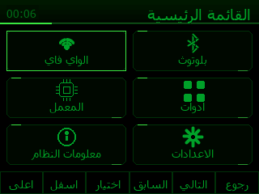
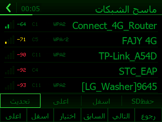
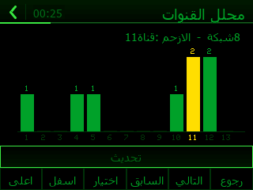
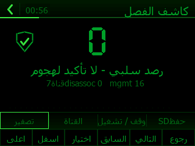
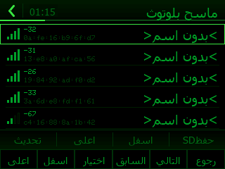
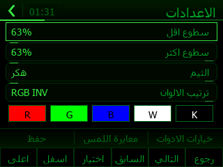
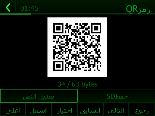
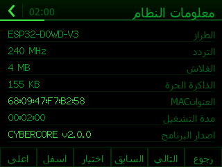

CYBERCORE فيرموير عربي مستقل بالكامل، يحوّل لوحة ESP32 بشاشة لمس إلى أداة جيب لفحص وتشخيص وأمن الشبكات اللاسلكية. كل الواجهة والنتائج بالعربية.
كل مميزات CYBERCORE دفاعية / سلبية فقط: مسح، رصد، تدقيق، تشخيص. لا يوجد أي هجوم — لا فصل هجومي، لا إغراق، ولا بوابات وهمية لسرقة كلمات السر. حتى «كاشف الفصل» يرصد الهجوم بدل أن يشنّه. استعمله على شبكاتك وأجهزتك فقط والتزم بقوانين بلدك.
صور حقيقية ملتقطة مباشرة من شاشة اللوحة (أخضر هكر على أسود).








| العنصر | التفصيل |
|---|---|
| اللوحة | CYD-2USB = ESP32-2432S028R «Cheap Yellow Display» |
| المعالج | ESP32-D0WD-V3 · نواتان · 240MHz · WiFi + Bluetooth |
| الذاكرة | فلاش 4MB (الفيرموير يستهلك ~57%) |
| الشاشة | ILI9341 مقاس 2.8" · 320×240 · ناقل HSPI |
| اللمس | XPT2046 مقاوم (أطراف مستقلة) |
| تخزين | فتحة microSD (ناقل VSPI) |
| إضافات | LED RGB · زر BOOT · منفذ هيدر (I2C / ADC / CC1101) |
| الوظيفة | الأطراف (GPIO) |
|---|---|
| الشاشة TFT (HSPI) | MOSI=13 · MISO=12 · SCLK=14 · CS=15 · DC=2 · RST=-1 · BL=21 |
| اللمس XPT2046 | CLK=25 · MOSI=32 · MISO=39 · CS=33 · IRQ=36 |
| بطاقة microSD | مشتركة على VSPI · CS=5 |
| I2C (هيدر) | SDA=22 · SCL=27 |
| قياس جهد ADC | GPIO35 (دخل فقط) |
| زر الرجوع | BOOT = GPIO0 |
pip install platformio cd CYBERCORE python -m platformio run -e cyd2usb -t upload --upload-port COM4 # رفع (المنفذ حسب جهازك) python -m platformio run -e cyd2usb # بناء فقط
ضع المشروع في مسار قصير (مثل C:\dev\CYBERCORE). المسارات الطويلة جداً تُفشل المترجم.
المكتبات: TFT_eSPI SmartRC-CC1101
QRCode ESP32Ping — كلها تتنزّل تلقائياً. إعدادات الشاشة في
platformio.ini.
الواجهة شبكة أيقونات، كلها باللمس:
أول مرة؟ ابدأ من «معلومات النظام» للتأكد أن كل شيء يعمل، ثم «الإعدادات» لضبط السطوع واللون، ثم جرّب «الواي فاي ← ماسح الشبكات».
| الأداة | ماذا تفعل · ومثال كيف تستفيد |
|---|---|
| ماسح الشبكات | يعرض كل الشبكات حولك: الاسم، قوة الإشارة (أعمدة + dBm)، القناة، نوع التشفير. مثال: تكتشف شبكة غريبة ظهرت قرب بيتك، أو تعرف أي مكان في البيت إشارة راوترك فيه أقوى. |
| تدقيق الحماية | يصنّف شبكاتك (ممتاز/جيد/ضعيف/خطر) حسب التشفير. مثال: تتأكد أن شبكتك على WPA2/WPA3 وليست WEP قديمة قابلة للاختراق، وتنبّه لو إحدى شبكاتك مفتوحة. |
| محلل القنوات | رسم بياني لعدد الشبكات في كل قناة (1–13) ويبرز الأزحم. مثال: النت بطيء؟ تشوف القناة المزدحمة وتغيّر راوترك لقناة فاضية (1/6/11) فيتحسّن الأداء والسرعة. |
| كاشف الفصل | يراقب الجو عبر القنوات ويعدّ إطارات الفصل (deauth)، دفاعي لا يُرسل شيئاً. مثال: نتك ينقطع فجأة ومتكرر؟ شغّله — لو عدّ إطارات فصل كثيرة فأحدٌ يحاول فصل أجهزتك عن الشبكة. |
| كاشف التوأم | يرصد وجود نفس اسم الشبكة ببصمتين MAC مختلفتين (Evil-Twin). مثال: في مقهى أو مطار، تتأكد أن شبكة «Free WiFi» ما لها نسخة مزيّفة نصبها أحدهم لسرقة بياناتك. |
| محلل الحركة | يعدّ كل الإطارات اللاسلكية ويعرض معدلها الحي + رسم نشاط. مثال: تعرف مدى ازدحام الأثير حولك وأي قناة مشغولة فعلياً بالحركة (مو بس بعدد الشبكات). |
| اتصال وأدوات | تتصل بشبكتك (تختارها وتكتب السر) ثم: معلومات IP/بوابة/DNS، ping، فحص أجهزة الشبكة، فحص بورتات. مثال: تكتشف كم جهاز متصل بشبكتك ولو فيه جهاز غريب (متطفّل)، وتتأكد أن راوترك يستجيب بزمن جيد. |
| شبكات مخفية | يكشف الشبكات التي تخفي اسمها (hidden SSID). مثال: تكتشف شبكة مخفية يشغّلها أحد الجيران، أو تتأكد أن شبكتك المخفية فعلاً لا يظهر اسمها. |
| PMF / WPS | تدقيق الإطارات المحمية PMF (802.11w) و WPS. مثال: تتأكد أن شبكتك محمية ضد هجوم الفصل (PMF مفعّل) وأن WPS مقفل — لأنه ثغرة شهيرة لكسر كلمة السر. |
| فحص خدمات | يفحص الخدمات/المنافذ المفتوحة على أجهزة شبكتك. مثال: تكتشف كاميرا أو طابعة أو جهاز إنترنت أشياء فيه منفذ مفتوح قد يكون نقطة ضعف تحتاج إغلاقها. |
| تشخيص DNS | استعلامات DNS لتشخيص دقّة وسرعة خادم الأسماء. مثال: المواقع تفتح ببطء؟ تختبر سرعة خادم DNS وتقرّر تغييره (مثلاً لـ Cloudflare 1.1.1.1 أو Google 8.8.8.8). |
| مراقب التغير | يراقب شبكاتك ويبلّغ عند ظهور/اختفاء نقطة وصول أو تغيّر قناة. مثال: تتركه يراقب، فينبّهك لو ظهرت نقطة وصول جديدة فجأة (قد تكون جهاز تجسس) أو اختفت شبكتك. |
| رؤوس HTTP | يفحص ترويسات HTTP للخوادم المحلية. مثال: تفحص صفحة إدارة راوترك أو كاميرتك وتعرف نوع الخادم وإعدادات الأمان من الترويسات. |
| الأداة | ماذا تفعل · ومثال كيف تستفيد |
|---|---|
| ماسح بلوتوث | يعرض أجهزة BLE القريبة: الاسم، العنوان، قوة الإشارة. مثال: تكتشف الأجهزة حولك (سماعات، ساعات، أجهزة تتبّع Tags) وتعرف كم جهاز يبثّ قربك. |
| رادار بلوتوث | يعرض أقرب جهاز كنقطة على رادار تتحرّك حسب قوة الإشارة. مثال: فقدت سماعتك أو جهاز تتبّع؟ تتبّع إشارته — كلما اقتربت قويت النقطة حتى تجده. |
| مراقب جهاز | يتتبّع جهازاً معيّناً باستمرار ويعرض تغيّر إشارته. مثال: تعرف لو جهاز معيّن (ساعة/هاتف) دخل نطاقك أو ابتعد — مفيد لمعرفة الحضور/الغياب. |
| تحليل إعلان | يحلّل تفاصيل إعلان BLE (advertisement) للجهاز. مثال: تعرف نوع الجهاز وما البيانات التي يعلنها للعلن (الشركة المصنّعة، الخدمات…). |
| الأداة | ماذا تفعل · ومثال كيف تستفيد |
|---|---|
| ماسح I2C | يفحص ناقل I2C (SDA=22, SCL=27) ويعرض عناوين الوحدات الموصولة. مثال: وصّلت حسّاس حرارة/ضغط وما اشتغل؟ تتأكد أنه متصل كهربائياً وتعرف عنوانه للبرمجة. |
| مقياس جهد | يقرأ الجهد التناظري على GPIO35 (حتى 3.3V) + رسم حي. مثال: تقيس جهد بطارية أو مخرج حسّاس بسرعة بدون أفوميتر. |
| كشّاف | إضاءة بيضاء كاملة بأقصى سطوع. مثال: إضاءة سريعة في الظلام أو للبحث عن شيء سقط. |
| الأداة | ماذا تفعل · ومثال كيف تستفيد |
|---|---|
| رمز QR | يولّد رمز QR يُمسح بالهاتف. مثال: تشارك رابطاً أو نصاً بسرعة — أيّ شخص يصوّره بكاميرته ويفتحه. |
| مؤقت | ساعة إيقاف (ابدأ/وقف/تصفير). مثال: توقيت تجربة معملية، تمرين رياضي، أو أي مهمة. |
| أفعى | لعبة الأفعى الكلاسيكية باللمس. مثال: تسلية سريعة أثناء الانتظار. |
| ملفات SD | مستعرض ملفات بطاقة microSD. مثال: تتصفّح نتائج الفحوصات المحفوظة (CSV) على الجهاز مباشرة قبل نقلها للكمبيوتر. |
| ساعة ومنبّه | ساعة + منبّه قابل للضبط. مثال: تستعمل الجهاز كساعة مكتب مع منبّه. |
| خيارات الأدوات | إعدادات عامة تتحكّم في كل أدوات الفحص. مثال: تطوّل مدة المسح لدقّة أعلى، تثبّت قناة معيّنة، أو تفعّل الحفظ التلقائي للنتائج على SD. |
قسم للمستخدم المتقدّم، مقسّم إلى 4 مجموعات. كل أداة تضبط مدخلاتها باللمس ثم «بدء»، والنتائج قابلة للحفظ على SD.
جودة اتصال WiFi · اقتراح أفضل قناة · زمن اتصال TCP · توفّر HTTP · تعريف الخدمة (banner) · اختبار وقت NTP.
مثال: قبل بثّ مباشر أو مكالمة مهمة، تقيس استقرار اتصالك وزمن استجابة الخادم لتتأكد أنه كافٍ.
سجلات AAAA / MX / TXT / NS · بحث عكسي · مقارنة بين خادمي DNS · اختبار استقرار DNS.
مثال: تتحقق من إعدادات نطاق (دومين) تملكه — سجلات البريد MX أو التحقق TXT — من جهازك مباشرة.
حاسبة شبكة (IPv4/CIDR) · تصنيف عنوان · تداخل شبكتين · تنسيق IPv6 · تحليل عنوان MAC.
مثال: تحسب نطاق العناوين وعدد الأجهزة الممكنة لشبكة 192.168.1.0/24 بسرعة، أو تعرف الشركة المصنّعة من عنوان MAC.
توليد كلمة مرور قوية · Base64 · Hex · ترميز URL · بصمة نص SHA256 · بصمة ملف SHA256 (من SD) · توليد UUID · حاسبة زمن نقل ملف.
مثال: تولّد كلمة مرور قوية فوراً، أو تحسب بصمة SHA256 لملف للتأكد أنه لم يُعدَّل (سلامة الملف).
| الإعداد | الوظيفة |
|---|---|
| السطوع | شريط لمس يغيّر إضاءة الشاشة مباشرة. |
| الثيم (اللون) | 4 ألوان: هكر (أخضر غامق، الافتراضي) / أخضر / سماوي / كهرماني. |
| ترتيب الألوان | إذا ظهرت ألوان شاشتك معكوسة، بدّل بين الأوضاع حتى تصبح صحيحة (بعض نسخ الشاشة ترتيبها مختلف). |
| معايرة اللمس | المس نقاطاً محددة لضبط دقّة اللمس وحفظها. |
| خيارات الأدوات | تحكّم موحّد: مدة المسح، القناة، أدنى إشارة، تحديث تلقائي، حفظ تلقائي، المنبّه. |
معظم الأدوات فيها زر «حفظ SD» (أو حفظ تلقائي). تُحفظ النتائج ملفات CSV منظّمة (شبكات، أجهزة بلوتوث، حركة، نتائج المختبر المتقدم) يمكن تصفّحها من «ملفات SD» أو فتحها على الكمبيوتر في Excel.
مثال: تمسح شبكات حيّك مرّة في اليوم مع الحفظ التلقائي، فتبني سجلاً زمنياً تعرف منه الشبكات الجديدة.
python -m esptool --port COM4 write_flash 0 backup/original_firmware_4MB.bin.الاستقبال والرصد مسموح في معظم الدول، لكن اعتراض أو فك اتصالات الآخرين قد يكون مخالفاً. استعمل الأداة على أجهزتك وشبكاتك فقط. لا يحتوي الفيرموير أي مسار هجومي.